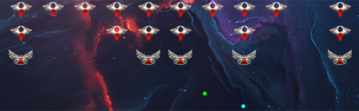

Üdvözöllek!
Fera vagyok, és ez a gyűjtőhelye a programozással kapcsolatos hobbi projektjeimnek. Ahogy a cím sugallja, nagyrészt szimulációkat, és játékokat fogsz itt találni. Olyan dolgokat, amik egy kis túlzással nevezhetők apró "kozmoszoknak". Nézz körül bátran :)
Wall Breaker Utopia [Fejlesztés folyamatban] [Processing/Java] [Felhasznált könyvtár: JBox2D]
A legújabb projektem egy DX-Ball remake. Egyenlőre elég kezdeti stádiumban van, viszont a főbb játékelemek már megtalálhatók benne. Úgy döntöttem felhasználom a Box2D fizikai motort, ami többek közt az Angry Birds-ben, és számos másik független játékban is megtalálható.
GitHub
Wolfram szív [2018, Október 12.] [Processing/Java]
Ez az animáció egy Wolfram elemi sejtautomata vizualizációja. Akárcsak az alább látható Élet Játékánál, itt is egyes cellák állapotát a környező cellák állapota határozza meg, viszont az életjátékkal ellentétben itt nem síkban, hanem sorban elhelyezkedő "sejtek" találhatók. A szimuláció tradicionális megjelenítése az egymást követő generációk egymás alá rajzolása, ez hozza létre a Sierpiński háromszögnek nevezett fraktálstruktúrát.
Arra gondoltam, mi lenne, hogyha egy középpont felé befelé haladva rajzolnám ki a cellákat, mint köríveket. A kialakuló alakzat egy kissé emlékeztetett egy szívre, így hát feje tetejére állítottam az egészet, és addig játszottam a méreteket szabályzó változókkal, amíg ezt a végeredményt kaptam.
Megjelenítés
GitHub
Raj szimuláció [2018, június 24.] [Processing/Java]

Ebben a szimulációban a Craig Reynolds féle "irányító viselkedéseket" implementáltam. Ezek a szabályok egyszerű és elegáns leírásai annak a komplex és organikus mozgásnak, amit a barna háromszögeken megfigyelhetünk. A kollektív madárraj, halraj szerű mozgás valójában illúzió. A mögöttes logika egy folyadék szimulációhoz hasonlatos. Az egyes elemek nincsenek tisztában egymás állapotával. Egy rejtett, mederszerű mező irányítja egységesnek tűnő viselkedésüket.
Futtatás
GitHub
Meteorids [2018, március 30.] [Processing/Java]

Egy újabb klasszikus saját elgondolásban. Itt az eredetihez hasonló minimalista látványvilágot próbáltam létrehozni. Egy kis extra a játékmenet szempontjából, hogy a hajó túl sok tüzelés után túlmelegszik, és fegyvere egy ideig használhatatlanná válik.
Sikerült jó néhány újonnan tanult koncepciót felhasználnom. Többek között kreáltam egy primitív fizikai "motort" ami elvégzi a játékban szereplő testek lendültének, sebességének, súrlódásának és tolóerejének kiszámítását. A testek ütközésének megállapításához nagy segítséget nyújtott Jeff Thompson könyve.
| Irányítás |
1. Játékos |
2. Játékos |
| Balra |
Balra nyíl |
S |
| Jobbra |
Jobbra nyíl |
F |
| Előre |
Fel nyíl |
E |
| Lövés |
Ctrl |
G |
Játék
Letöltés
GitHub
Az Élet Játéka [2017, október 29.] [JavaScript] [Felhasznált könyvtár: P5JS]

A saját verzióm a matematikus, Johny Conway, legendás Életjátékáról. A szabályok rendkívül egyszerűek. Ennek ellenére a játék érdekessége, hogy mennyire összetett magasabb rendű folyamatok jöhetnek létre egyszerű szabályok összjátékából. Nevezzük a négyzeteket "sejteknek". Minden egyes sejt lehet élő, vagy halott, és az állapotát a vele szomszédos sejtek állapota határozza meg. Egy élő sejt elpusztul amennyiben kevesebb, mint három élő szomszédja van (a magány miatt), vagy ha négynél több élő szomszédja van (túlnépesedés). Máskülönben a sejt életben marad. Ha egy halott sejtet pontosan három élő sejt fog közre, a sejt élővé válik. Ezen szabályokat a program egy időben hajtja végre minden egyes sejten.
Ahogy telik az idő sejtcsoportosulások alakulnak ki. Ezek a többsejtű organizmusok olyan tulajdonságokkal rendelkezhetnek, amelyek nem részei a játék alapszabályainak. A mozgás, növekedés, reprodukció képességével, talán még intelligenciával is? Minden esetre érdekes elnézni.
| Irányítás |
|
| Start/Stop |
Space |
| Összekeverés |
Ctrl |
| Sejtek rajzolása |
Jobb klikk |
Futtatás
GitHub
Alien Aggressors [2017, október] [JavaScript] [Felhasznált könyvtár: P5JS]

Az első általam írt játék. Egy kis tribűt a klasszikus Space Invaders-nek. Nem tökéletes, de úgy néz ki, hogy a végeredmény egész játszható. Van benne helyi többjátékos mód, úgyhogy, ha egy kis kooperatív mókára vágytok, tegyetek egy próbát. Külön köszönet Balagenak a menő grafikáért.
| Irányítás |
1. Játékos |
2. Játékos |
| Balra |
Balra nyíl |
X |
| Jobbra |
Jobbra nyíl |
C |
| Lövés |
Space |
Y |
Játék
GitHub